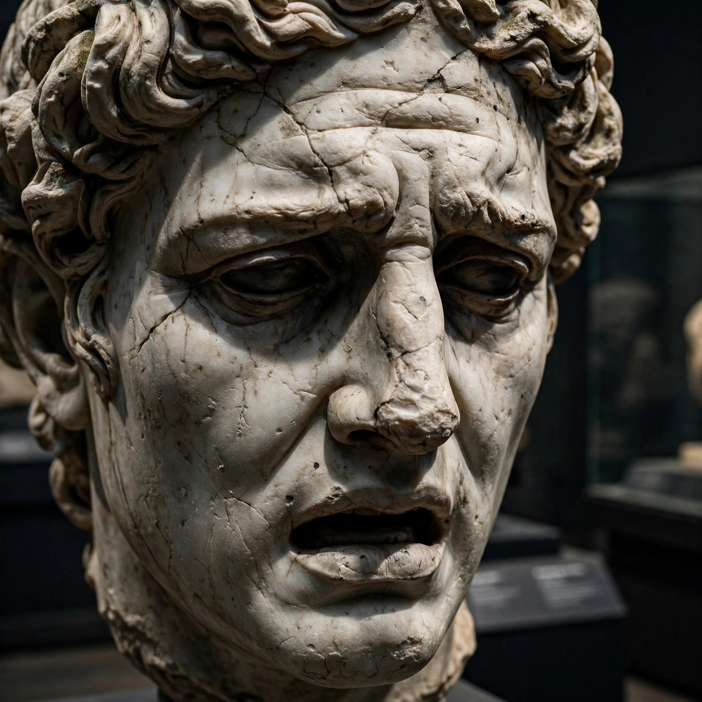

| Scopas | |
|---|---|
| Born | c. 395 BC, Paros |
| Died | c. 350 BC |
| Nationality | Greek |
| Occupation | Sculptor and architect |
| Notable works | Temple of Athena Alea, Tegea; Mausoleum friezes; Pothos |

Scopas (Greek: Σκόπας, Skopas; c. 395 – c. 350 BC) was a Greek sculptor and architect of the 4th century BC, from the island of Paros. With Praxiteles and Lysippos he is counted among the three greatest sculptors of the late Classical period. His work is distinguished by intense emotional expression — the "Scopasic" pathos of deep-set eyes, furrowed brows and slightly parted lips — which pointed Greek art toward the drama of the Hellenistic age.
Scopas's first major recorded work was architectural: he designed and partly sculpted the new Temple of Athena Alea at Tegea in Arcadia, built after the old temple burned in 395/4 BC. Pausanias describes its pediments — works of Scopas himself — showing the Calydonian boar hunt (east) and Telephus fighting Achilles (west). Fragments of the pedimental figures, excavated at Tegea, display the characteristic Scopasic heads: square faces, heavy brows and eyes sunk deep beneath them.
Scopas was one of the four master sculptors — with Bryaxis, Leochares and Timotheus — who carved the sculptural decoration of the Mausoleum at Halicarnassus (c. 350 BC), the tomb of Mausolus built by the architects Satyros and Pythius. Pliny assigns him the east side of the building; slabs of the Amazonomachy frieze from the Mausoleum, showing Greeks battling Amazons in swirling action, are now in the British Museum and are often associated with his workshop.
Ancient sources credit Scopas with statues across the Greek world: a frenzied Maenad (Bacchant) in Dresden, whose whirling drapery embodies Dionysiac ecstasy; a Pothos (Yearning) in the Samothrace and Megara traditions; an Ares for Halicarnassus; a Hecate; and works for the temple of Artemis at Ephesus, where he is said to have carved one of the sculptured column drums (columnae caelatae). He also worked at Ephesus's Artemision and in Asia Minor alongside the Mausoleum team.
Where Praxiteles embodied grace and Lysippos elegance, Scopas embodied passion. His compact, muscular figures, heads turned sharply, mouths open, and eyes shadowed beneath overhanging brows conveyed suffering, longing and ecstasy with unprecedented force, deeply influencing Hellenistic sculpture such as the Pergamon Altar and the Laocoön group.